FlowForge documentation
FlowForge is a self-hosted workflow automation platform, in the same family as n8n, Make and Zapier, that runs on ordinary PHP hosting. You connect apps on a visual canvas, and FlowForge runs the workflows in the background on your own server with a single cron job.
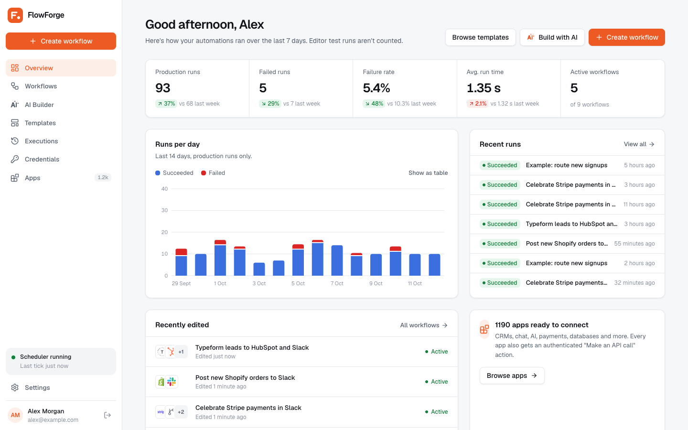
This guide covers installing FlowForge on Hostinger hPanel, cPanel and a VPS, setting up the cron job, and every part of the app. FlowForge is free and open source under the AGPL-3.0 license. If you'd rather not install or run it yourself, we can install or host it for you.
Features
- Visual workflow builder. Drag apps onto a canvas, pick a trigger, add steps with "What happens next?", and branch with If/Else and filters.
- 1,190 apps. Gmail, Slack, Google Sheets, HubSpot, Shopify, WooCommerce, OpenAI, LinkedIn, WhatsApp, Telegram, Notion, Airtable and many more, plus a generic HTTP request step for anything else.
- AI Builder. Describe a workflow in plain words and it builds it for you, with the right apps, settings and data links. Works with DeepSeek, Qwen, OpenAI, Anthropic Claude and Google Gemini, using your own API key.
- Every kind of trigger. Webhooks, schedules ("every weekday at 9:00"), app triggers that check for new items, manual runs, and an error trigger that starts when another workflow fails.
- Step debugger. Every run keeps each step's input, output and HTTP request, so you can see exactly what happened and retry.
- Built for shared hosting. No Docker, Node, Redis or Supervisor. Upload a zip, run the setup wizard, add one cron job.
- Team access. Invite people as admins or members, and choose whether members can view, edit or delete workflows and use the AI Builder.
- MCP server. Claude Code, Cursor, VS Code and other AI agents can search apps and build, test and run workflows on your FlowForge.
- One-click updates. Upload the update zip in Settings and FlowForge updates itself, keeping your data.
- Works on phones like a native app, with light and dark themes.
- Open source. Free to use, self-host and modify under the AGPL-3.0 license. The code is on GitHub.
- Secure by default. App credentials and API keys are encrypted, never sent to the browser and masked in run logs.
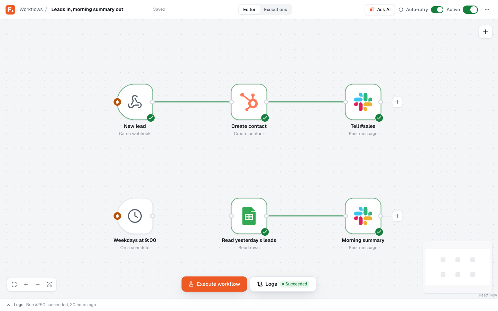
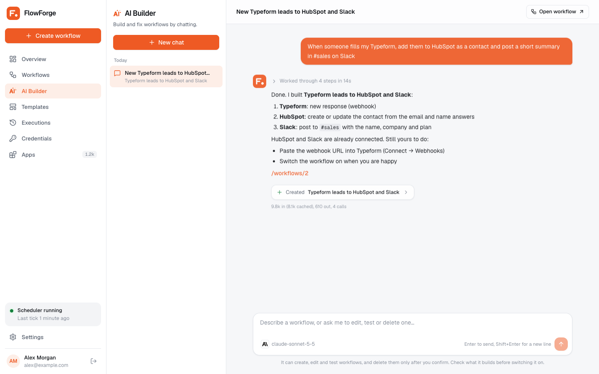
Server requirements
Almost every shared hosting plan from the last few years meets these. The setup wizard checks them for you before anything is installed.
| Requirement | Details |
|---|---|
| PHP | 8.2 or newer (8.3 recommended) |
| PHP extensions | pdo_mysql, curl, mbstring, openssl, fileinfo, gd, zip, tokenizer, ctype, xml |
| Database | MySQL 5.7+ or MariaDB 10.3+ |
| Web server | Apache or LiteSpeed with mod_rewrite, or Nginx |
| Cron | One cron job that can run every minute (all hPanel and cPanel plans allow this) |
| Outgoing HTTPS | To reach the apps you connect |
| Disk space | About 150 MB, plus your run history |
| HTTPS | Strongly recommended. Many apps (Google, LinkedIn, Facebook) only allow sign-in redirects to https:// addresses. |
You don't need SSH, Composer or Node.js on the server: the download already includes everything.
Download
Download the latest release from GitHub Releases. Each release has these files:
| File | What it's for |
|---|---|
flowforge-install-1.0.0.zip | The app, ready to run: no Composer or Node.js needed on the server. Upload this for a new installation. |
flowforge-update-1.0.0.zip | For updating an existing installation in Settings → Updates. Not needed for a new install. |
extract-flowforge.php | A helper that unpacks the install zip on your server if your File Manager times out while extracting it. |
Developers can also clone the repository and build it themselves; the steps are in the README.
Installation and hosting services
Don't want to set it up yourself?
FlowForge is free, and you're welcome to install it yourself with this guide. If you'd rather leave it to us, we offer paid services:
- Installation on your Hostinger hPanel, cPanel or VPS hosting, including the database, SSL and the cron job.
- Managed hosting: we run FlowForge for you on our servers, with backups and updates.
- Setup help: connecting your apps and building your first workflows.
- Custom integrations for apps or APIs that aren't in the catalog yet.
Email support@sarimtools.com with what you need, your domain and your hosting panel, and we'll send you a quote. Don't send any passwords until we reply.
Before you start
Have these three things ready. It takes about 10 minutes from here.
- A domain or subdomain for FlowForge, such as
automation.your-domain.com. - An SSL certificate on that domain, so it opens with
https://. Hostinger and cPanel give you one free. - The files
flowforge-install-1.0.0.zipandextract-flowforge.phpfrom the latest release.
Then follow the guide for your hosting:
Install on Hostinger hPanel
For Hostinger's web and cloud hosting plans. In hPanel, everything below starts from WebsitesDashboard next to your website.
1. Set PHP 8.2 or newer
- Open AdvancedPHP Configuration.
- On the PHP version tab, choose 8.3 (or 8.2) and click Update.
- On the PHP extensions tab, make sure
pdo_mysql,curl,mbstring,fileinfo,gdandzipare ticked. They usually are.
Want FlowForge on a subdomain? Create it first under DomainsSubdomains, then switch to it in the website list.
2. Create the database
- Open DatabasesManagement.
- Under Create a new MySQL database and database user, enter a database name (e.g.
flowforge), a username and a strong password, then click Create. - Write down the full names hPanel shows, including the prefix, for example
u123456789_flowforge. The database host islocalhost.
3. Upload and extract
- Open FilesFile Manager and go into
public_htmlof the domain (or subdomain) you chose. It should be empty: delete Hostinger's defaultdefault.phpif it's there. - Click Upload and upload
flowforge-install-1.0.0.zip. - Right-click the zip, choose Extract, and extract into the current folder (
.). - Check that you now see the folders
app,publicandvendorand the fileartisan. Ifpublicorvendoris missing, the File Manager timed out: follow the next step. - Only if extraction stopped part-way: upload
extract-flowforge.phpinto the same folder as the zip and openhttps://your-domain.com/extract-flowforge.php. It unpacks the zip in small batches, deletes the zip and itself, and opens the installer.
You extract the whole app into public_html. That's safe: the included .htaccess sends every request into FlowForge's public folder, so .env, storage and the code can't be opened from a browser.
4. Turn on SSL
Open SecuritySSL and install the free certificate for your domain if it isn't active yet.
5. Run the setup wizard
Open https://your-domain.com/install and follow the setup wizard. On the last step, the wizard shows the exact cron command for your server; the Hostinger steps are in The cron job.
Install on cPanel
For any host with cPanel (Namecheap, Bluehost, HostGator, A2, InMotion and most resellers). Menu names can vary slightly between hosts; use the search box at the top of cPanel if you can't find one.
1. Set PHP 8.2 or newer
- Open SoftwareMultiPHP Manager, tick your domain, choose PHP 8.3 (or 8.2) and click Apply.
- If your host uses CloudLinux, you'll see SoftwareSelect PHP Version instead. Choose 8.3, then on the Extensions list tick
pdo_mysql,curl,mbstring,fileinfo,gdandzip.
2. Create the database
- Open DatabasesMySQL Database Wizard.
- Enter a database name (e.g.
flowforge) and click Next Step. - Create a user with a strong password and click Create User.
- Tick ALL PRIVILEGES and click Next Step.
- Note the full names with your cPanel prefix, such as
myuser_flowforge. The host islocalhost.
3. Upload and extract
You have two options. Pick one.
Option A (recommended): a subdomain pointing at FlowForge's public folder.
- In FilesFile Manager, create a folder
flowforgein your home directory (next topublic_html, not inside it). - Upload
flowforge-install-1.0.0.zipinto it, right-click it and choose Extract. - Open DomainsDomainsCreate A New Domain. Enter your subdomain (e.g.
automation.your-domain.com), untick Share document root, set the document root toflowforge/public, and click Submit. On older cPanel versions this is DomainsSubdomains.
Option B: your main domain. The main domain's folder is always public_html, so upload the zip into public_html and extract it there. The included .htaccess takes care of the rest, as on Hostinger.
Extraction stopped part-way? If you don't see public, vendor and artisan after extracting:
- With option B, upload
extract-flowforge.phpnext to the zip inpublic_htmland openhttps://your-domain.com/extract-flowforge.php. It finishes the job in small batches. - With option A, the helper can't be opened from a browser because it would sit outside the website folder. Delete the partly extracted files and extract again (a second try usually works), or use option B.
4. Turn on SSL
Open SecuritySSL/TLS Status and click Run AutoSSL so your (sub)domain gets a free certificate.
5. Run the setup wizard
Open https://your-domain.com/install and follow the setup wizard. The cPanel cron steps are in The cron job.
Install on a VPS or cloud server
These steps are for a fresh Ubuntu 24.04 server (DigitalOcean, Hetzner, Vultr, Linode, AWS Lightsail, Hostinger VPS) with Nginx. You need SSH access as a user with sudo, and your domain's DNS A record pointing at the server's IP.
1. Install PHP, Nginx and MySQL
sudo apt update
sudo apt install -y nginx mysql-server unzip \
php8.3-fpm php8.3-mysql php8.3-curl php8.3-mbstring php8.3-xml \
php8.3-zip php8.3-gd php8.3-intl php8.3-bcmath2. Create the database
Replace the password with your own strong one and keep it for the wizard.
sudo mysql -e "CREATE DATABASE flowforge CHARACTER SET utf8mb4 COLLATE utf8mb4_unicode_ci;
CREATE USER 'flowforge'@'localhost' IDENTIFIED BY 'choose-a-strong-password';
GRANT ALL PRIVILEGES ON flowforge.* TO 'flowforge'@'localhost';
FLUSH PRIVILEGES;"3. Upload the files
From your computer, copy the zip to the server, then unpack it on the server:
scp flowforge-install-1.0.0.zip you@your-server-ip:/tmp/sudo mkdir -p /var/www/flowforge
sudo unzip -q /tmp/flowforge-install-1.0.0.zip -d /var/www/flowforge
sudo chown -R www-data:www-data /var/www/flowforge4. Configure Nginx
Create /etc/nginx/sites-available/flowforge with your domain:
server {
listen 80;
server_name automation.your-domain.com;
root /var/www/flowforge/public;
index index.php;
client_max_body_size 20M;
location / {
try_files $uri $uri/ /index.php?$query_string;
}
location ~ \.php$ {
include snippets/fastcgi-php.conf;
fastcgi_pass unix:/run/php/php8.3-fpm.sock;
}
location ~ /\.(?!well-known) {
deny all;
}
}Enable it and get a free SSL certificate:
sudo ln -s /etc/nginx/sites-available/flowforge /etc/nginx/sites-enabled/
sudo nginx -t && sudo systemctl reload nginx
sudo apt install -y certbot python3-certbot-nginx
sudo certbot --nginx -d automation.your-domain.comUsing Apache instead? Point the site's DocumentRoot at /var/www/flowforge/public, allow overrides for it (AllowOverride All), and enable rewrites with sudo a2enmod rewrite. FlowForge's own .htaccess handles the rest.
5. Add the cron job
Run the cron job as the web server's user, so files it creates stay writable by the app:
sudo crontab -u www-data -eAdd this line, then save:
* * * * * /usr/bin/php /var/www/flowforge/artisan schedule:run >> /dev/null 2>&16. Run the setup wizard
Open https://automation.your-domain.com/install and follow the setup wizard. The cron step turns green within a minute because you've already added the cron job.
The setup wizard
Open https://your-domain.com/install. The wizard has five steps and saves your progress, so you can close the tab and come back.
Step 1: Check the server
FlowForge checks the PHP version, extensions and folder permissions. Everything should have a green tick. If something is red, the message says what to change; fix it in your hosting panel and reload the page. Then click Continue.
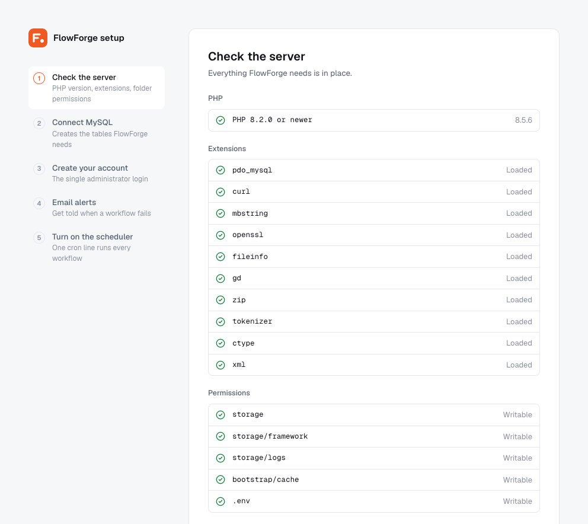
Step 2: Connect MySQL
Enter the database details you created: host localhost, port 3306, and the full database name, username and password (with the prefix). Click Test connection, then Save and create tables. FlowForge writes its .env file and creates its tables.
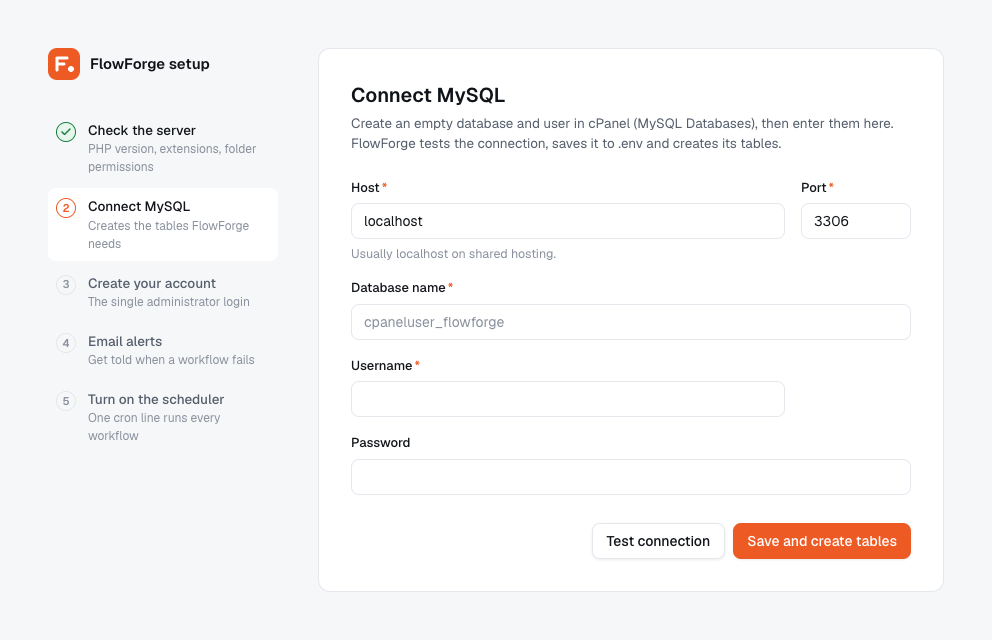
Step 3: Create your account
Enter your name, email and a password (at least 10 characters) for the owner account, and choose your timezone, then click Create account. Schedules such as "every day at 9:00" run in this timezone.
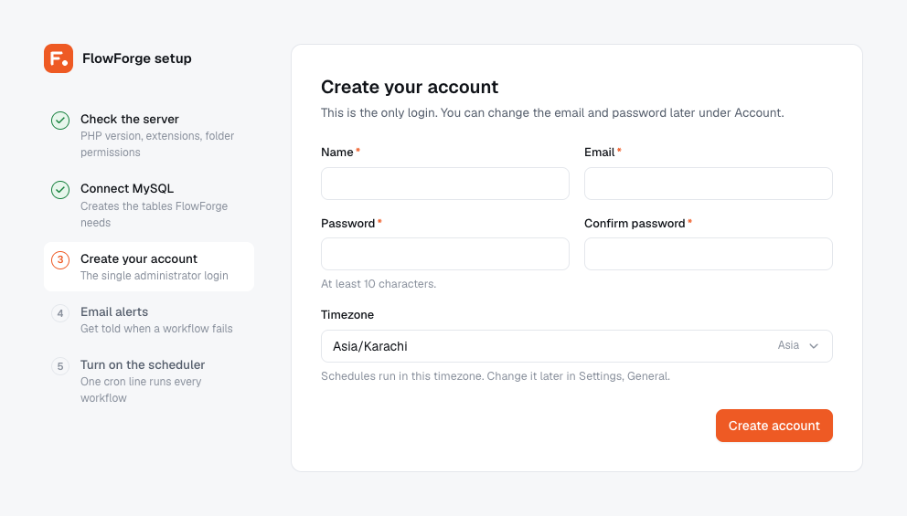
Step 4: Email alerts
Add an SMTP mailbox so FlowForge can email you when a workflow fails or the cron job stops, and send password-reset codes. Click Send test email to check it, then Save and continue. You can also click Skip for now and set it up later in SettingsEmail & alerts.
| Host | SMTP server | Port and security | Username |
|---|---|---|---|
| Hostinger | smtp.hostinger.com | 465, SSL | The full email address |
| cPanel | mail.your-domain.com | 465, SSL | The full email address |
| Gmail / Google Workspace | smtp.gmail.com | 587, TLS | Your address, with an app password |
Create the mailbox first in hPanel (EmailsEmail Accounts) or cPanel (EmailEmail Accounts). cPanel's Connect Devices link next to a mailbox shows its exact settings.
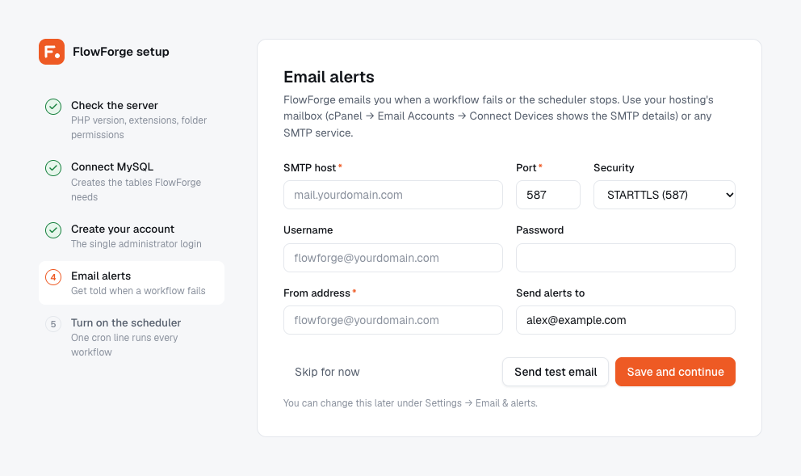
Step 5: Turn on the scheduler
This step is required: FlowForge runs workflows through one cron job, and setup only finishes once that cron job has actually run.
- Click Set it up for me first. On many hosts FlowForge can add the cron job itself; your other cron jobs are kept.
- If that isn't allowed on your host, pick your panel's tab (Hostinger hPanel, cPanel, DirectAdmin or SSH/VPS) and follow the steps. The command shown already has your server's PHP and folder paths filled in; click Copy to copy it. The panel steps are also in The cron job.
- Wait up to a minute. The wizard checks every 5 seconds and shows Cron is running when it works. Then click Finish and sign in.
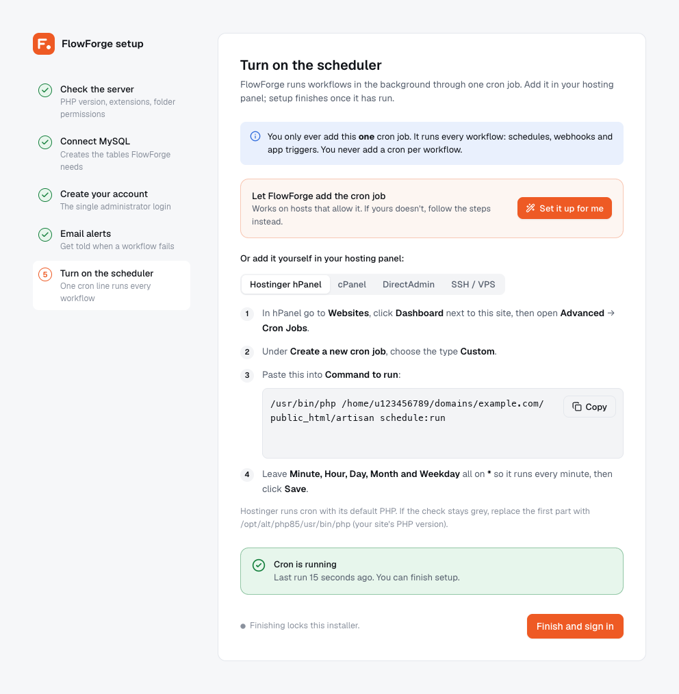
When setup finishes, /install is locked for good. Sign in with the account you created in step 3.
The cron job
A cron job is a command your server runs on a timer. FlowForge needs one that runs every minute. Each time it runs, FlowForge starts due schedules, checks app triggers for new items, and works through queued runs, including webhook runs.
You only ever add one cron job. It runs every workflow you'll ever create. You never add a cron job per workflow.
The command looks like this. Use the one the wizard shows you: it has your real paths.
/usr/bin/php /home/USER/path-to-flowforge/artisan schedule:runHostinger hPanel
- Go to WebsitesDashboardAdvancedCron Jobs.
- Under Create a new cron job, choose the type Custom.
- Paste the command into Command to run.
- Leave Minute, Hour, Day, Month and Weekday all on
*so it runs every minute, then click Save.
Hostinger runs cron with its default PHP. If the wizard stays on "Waiting", replace /usr/bin/php with your site's PHP version, e.g. /opt/alt/php83/usr/bin/php for PHP 8.3.
cPanel
- Open AdvancedCron Jobs.
- Under Add New Cron Job, set Common Settings to Once Per Minute (* * * * *).
- Paste the command into Command, with
>/dev/null 2>&1on the end so cPanel doesn't email you every minute. - Click Add New Cron Job.
Cron must use PHP 8.2 or newer. If the wizard stays on "Waiting", use /opt/cpanel/ea-php83/root/usr/bin/php, or /opt/alt/php83/usr/bin/php on CloudLinux servers, as the first part of the command.
DirectAdmin
- Open Advanced FeaturesCron JobsCreate Cron Job.
- Set Minute, Hour, Day of Month, Month and Day of Week to
*. - Paste the command, ending with
>/dev/null 2>&1, and click Create.
SSH or VPS
Run crontab -e as the website's user (on a VPS: sudo crontab -u www-data -e) and add:
* * * * * /usr/bin/php /var/www/flowforge/artisan schedule:run >> /dev/null 2>&1Checking it's running
The bottom of the sidebar shows Scheduler running with the time of the last tick while cron is healthy. If cron stops for 10 minutes or more, the sidebar turns red and FlowForge emails the admins when it runs again (if email is set up).
Open source license
FlowForge is free software, released under the GNU Affero General Public License v3.0 (AGPL-3.0). The full text is in the LICENSE file.
- You can use FlowForge for free, for yourself, your company or your clients, on as many servers as you like, and change its code.
- If you change the code and let other people use your changed version over a network (for example, you host it for customers), you must offer those users the source code of your version, under the same license.
- No warranty. FlowForge is provided as is. For guaranteed help, see our services.
This is a short summary, not legal advice; the license text is what counts.
Your first workflow
A workflow is a trigger (what starts it) followed by steps (what it does). Here's a workflow that sends a Slack message for every new form submission.
- Create it. Click Create workflow in the sidebar and give it a name.
- Choose the trigger. Click the trigger node and search for an app or a built-in trigger such as Webhook or Schedule. Popular triggers are listed first.
- Add a step. Click the + after the trigger. "What happens next?" opens: search for Slack and pick Send message.
- Connect the app. In the step editor, choose or add a Slack connection. See Credentials.
- Fill in the settings. Type the message, and drag values from the Input panel on the left into it, like the person's name. See Passing data between steps.
- Test and switch on. Click Test workflow, check the result, then switch the workflow Active.
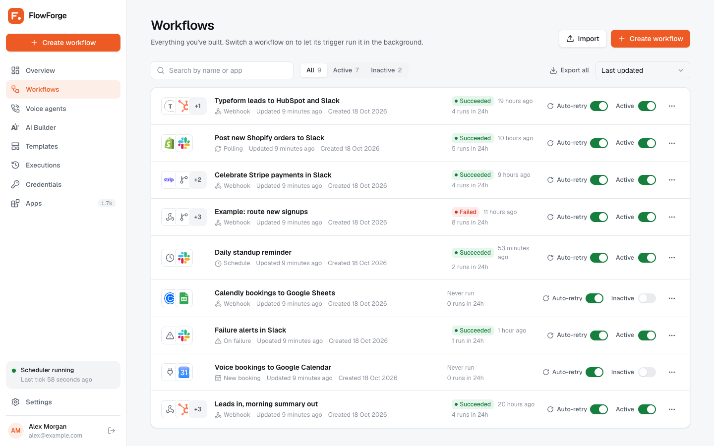
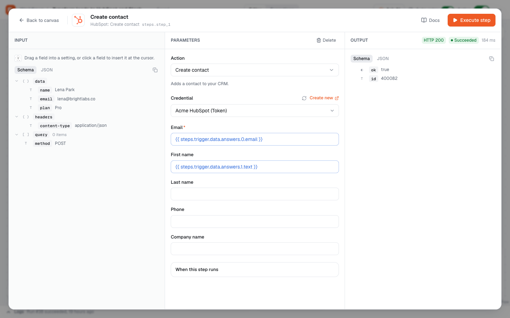
Other things you can do on the canvas: drag nodes to rearrange them, add If/Else to branch, add a Filter to stop a run when a condition isn't met, duplicate a workflow from its menu, and use Execute step in the step editor to run just one step (and the steps before it).
Triggers
| Trigger | When it runs |
|---|---|
| Webhook | When another service sends a request to the workflow's unique URL (https://your-domain.com/api/webhook/…). Copy the URL from the trigger. While the workflow is off, requests are saved as test data so you can build with real fields. |
| Schedule | On a timetable you pick in plain words: every 15 minutes, every day at 9:00, every Monday, the 1st of each month. It uses the timezone in Settings → General. |
| App triggers | "New row in Google Sheets", "New order in Shopify" and so on. FlowForge checks the app every few minutes; the first check only records what's already there, then each new item starts one run. |
| Manual | Only when you click Test workflow, or when the AI Builder or an MCP agent runs it. |
| Error trigger | When another workflow fails. Use it to send failure alerts to Slack, Telegram or anywhere else. |
Webhook runs start on the next cron tick, so within about a minute.
Passing data between steps
Any setting can use values from earlier steps. In the step editor, drag a field from the Input panel on the left into a setting, or click into the setting and then click the field. FlowForge inserts a reference like this:
{{ steps.trigger.data.email }} a field from the webhook
{{ steps.step_2.text }} the text an AI step wrote
{{ steps.step_2.items[0].id }} the first item's id
{{ steps.step_2.items.*.id }} every item's id
{{ workflow.name }} {{ execution.id }} {{ now }}Test the workflow once so FlowForge knows what each step returns; after that, every field is listed by name. When a field contains only one reference, the value keeps its type (a list stays a list).
Testing and switching on
- Test workflow runs it straight away and opens the step debugger. Tests perform real actions: a test that sends an email really sends it.
- Execute step in the step editor runs one step, plus the steps before it, so you can see its output.
- Switch a workflow Active when it works. Only active workflows run on their webhook, schedule or app trigger.
- If a step fails, the run stops there and the error is shown on the step, with any tip for that app's error.
Credentials and app connections
Credentials are your saved logins for apps: API keys, tokens and sign-in connections. They're encrypted on your server, never shown again after saving, and masked out of run logs.
- Add one from a step's editor (Connect) or from Credentials in the sidebar.
- For API key apps, the form links to where that app shows your key.
- For sign-in (OAuth) apps such as Google, Microsoft, LinkedIn or Facebook, you first create an app in that service's developer console and paste its Client ID and Client Secret into FlowForge. Use this as the redirect (callback) URL there:
https://your-domain.com/oauth/callbackFlowForge refreshes sign-in tokens automatically. For LinkedIn, the account you connect is used to post, so you don't need to look up any IDs.
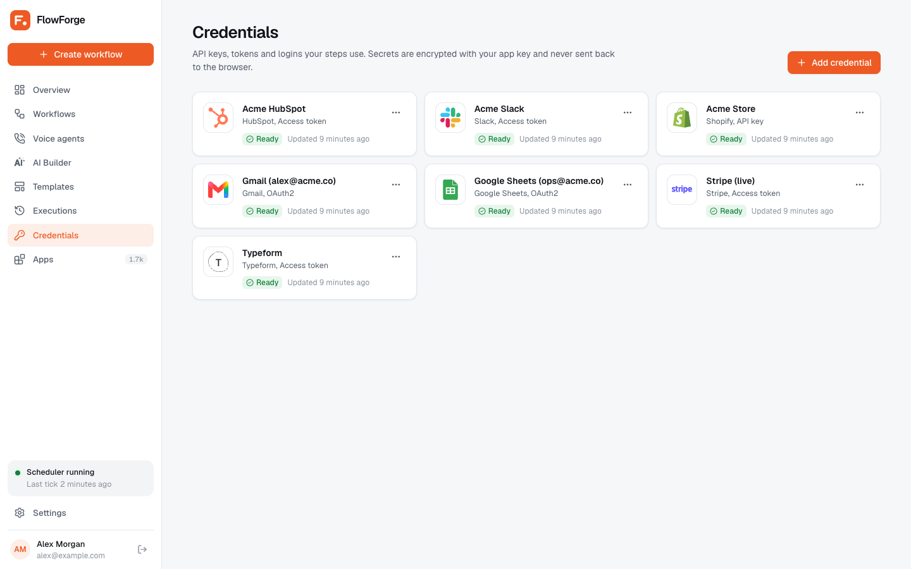
AI Builder
Open AI Builder in the sidebar (or Ask AI in the editor) and describe what you want in plain words, in English or your own language. For example: "Every morning at 9, get today's top story from an RSS feed, have AI write a LinkedIn post about it, and post it."
The AI Builder searches the app catalog, reads each action's settings, builds and saves the workflow, links the data between steps, attaches matching credentials, and tells you what's left to fill in. It can also explain, edit, test and switch on existing workflows. It only tests when you ask, and asks you to confirm before deleting anything.
Setting up a provider
- Open SettingsAI builder.
- Choose a provider and paste your API key. It's stored encrypted and never sent to the browser.
- Pick a model (the default is a good start) and click Save.
| Provider | Where to get a key | Default model |
|---|---|---|
| DeepSeek | platform.deepseek.com | deepseek-chat |
| Qwen (Alibaba Cloud) | Alibaba Cloud Model Studio | qwen-plus |
| OpenAI | platform.openai.com | gpt-5-mini |
| Anthropic Claude | console.anthropic.com | claude-opus-5-5 |
| Google Gemini | aistudio.google.com | gemini-2.5-flash |
Each answer shows how many tokens it used. The AI Builder never sends the whole app catalog to the model; it searches it, which keeps costs low. Each person's chats are private.
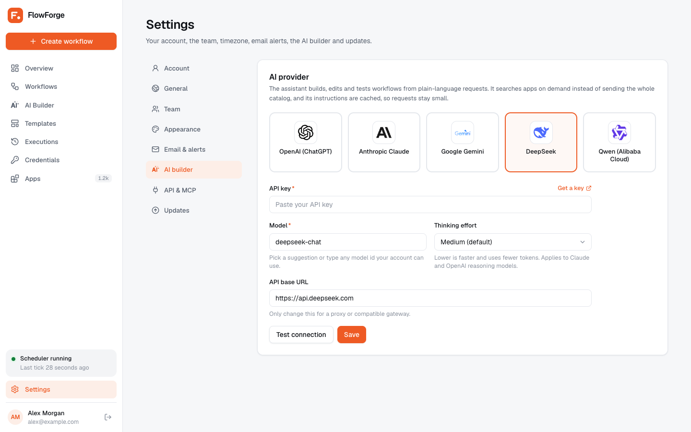
Templates and apps
Templates has 50 ready-made workflows, such as new form entries to a Google Sheet, Stripe payments to Slack, or AI summaries of new emails. Click Use template to copy one into a new workflow, then connect your accounts.
Apps lists all 1,190 apps by category. Open one to see its actions and triggers and what each needs. For an app or endpoint that isn't covered, use the HTTP request step or the app's Make an API call action.
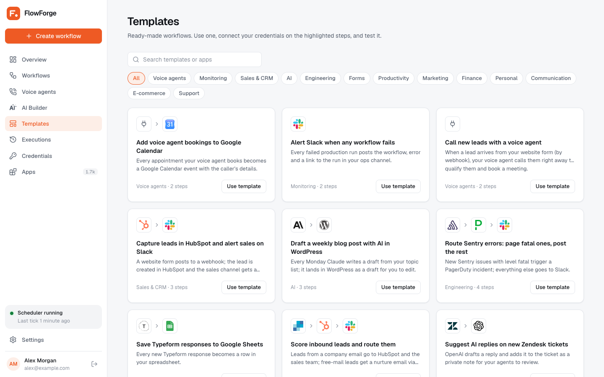
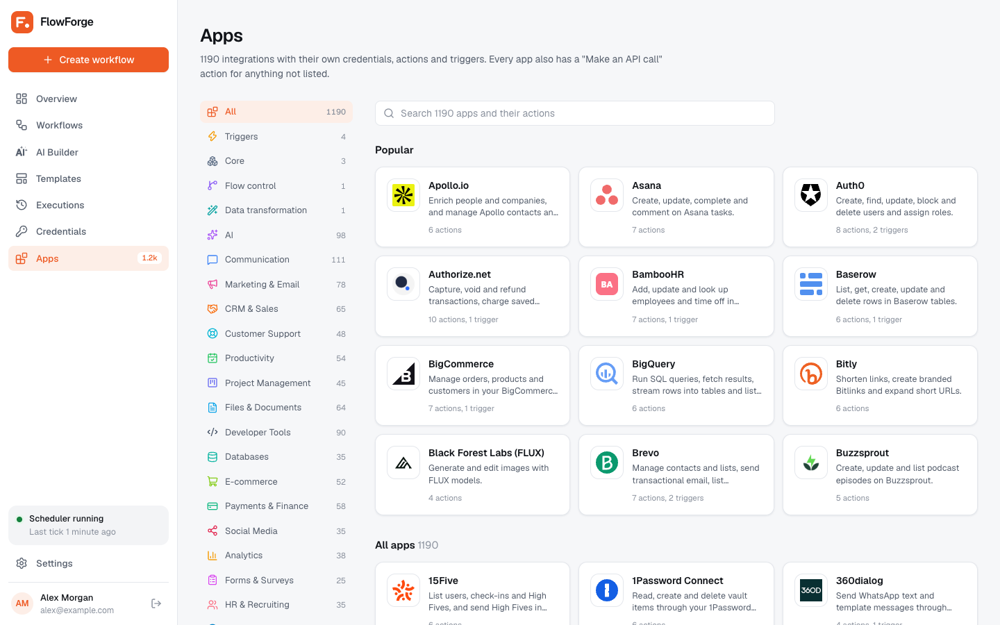
Each action follows the app's published API documentation. APIs change over time, so test a step with your account before relying on it, and tell us if something no longer works.
Executions
Executions lists every run with its status, trigger and duration. Open a run to see each step's input, output and HTTP request, and click Retry to run it again with the same trigger data. Runs older than 30 days are deleted automatically.
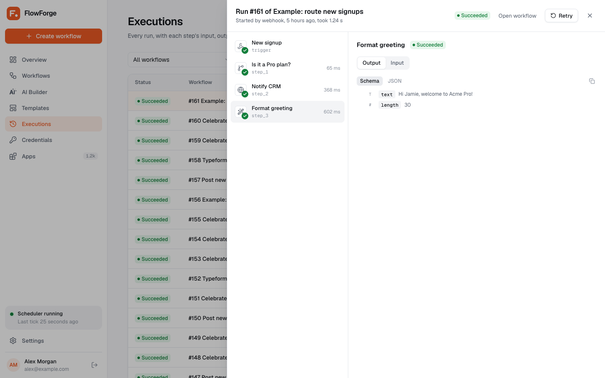
General and timezone
In SettingsGeneral, set the timezone that schedules run in. In Appearance, each person picks light or dark. In Account, change your name, email and password.
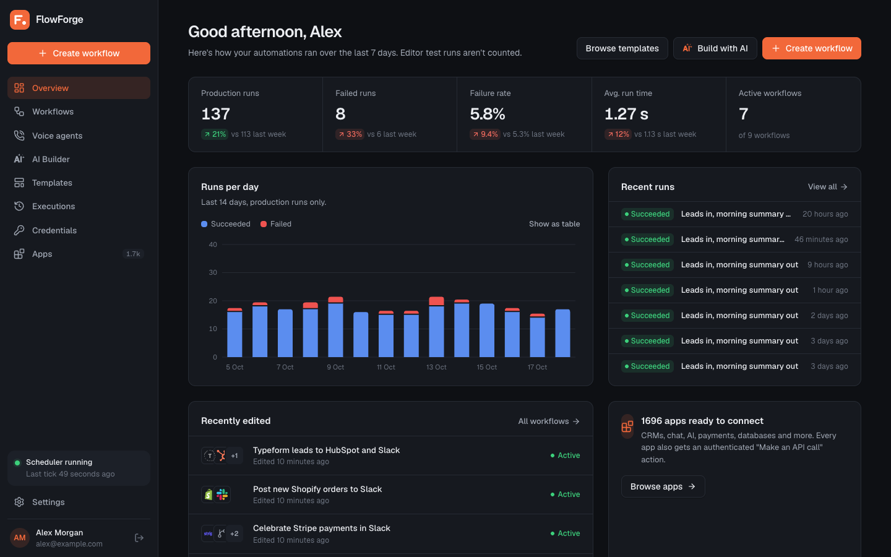
Forgot your password? Click Forgot password? on the sign-in page: FlowForge emails a 6-digit code that works for 15 minutes. If email isn't set up, run this from SSH or your host's terminal:
php artisan flowforge:reset-password you@example.comTeam and permissions
In SettingsTeam, the owner and admins can invite people by email. They open the link and choose their own password. Without email set up, copy the invite link and send it yourself. Links work once, for 7 days.
| Role or access | Can do |
|---|---|
| Owner | Everything. Can't be removed. |
| Admin | Everything, including settings, team and updates. |
| Member: view workflows | See workflows (read-only), runs and templates. |
| Member: edit workflows | Create, edit, test and switch workflows on or off, and use credentials (without seeing secrets). |
| Member: delete workflows | Also delete workflows and credentials. |
| Member: AI Builder | Use the AI Builder, which can only do what the member's workflow access allows. |
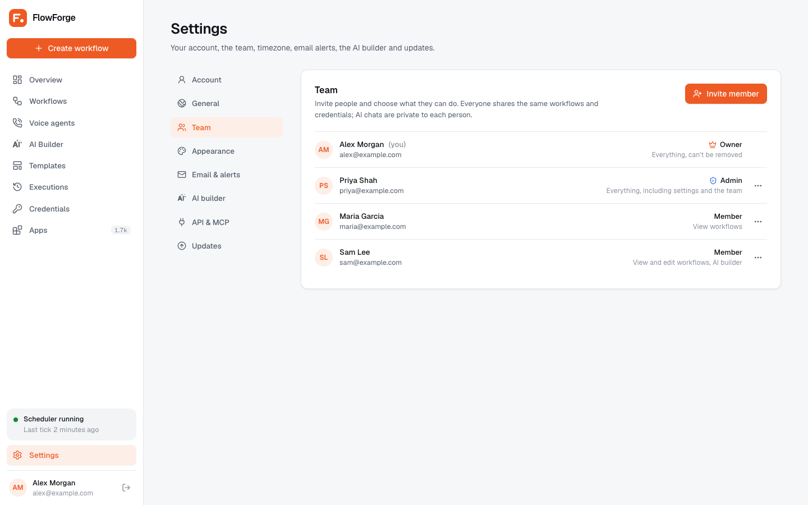
Email alerts
With SMTP set up in SettingsEmail & alerts, FlowForge emails the owner and admins when:
- a live run fails, with the failing step, the error and a link to the run (at most one email per workflow every 15 minutes; you can change this),
- an app trigger can't reach its app,
- the cron job was down for 10 minutes or more.
Test runs never send alerts. For alerts in Slack, Telegram or elsewhere, build a workflow with the Error trigger.
API and MCP for AI agents
FlowForge includes an MCP server, so AI agents like Claude Code, Cursor and VS Code can search apps and build, edit, test and run workflows on your FlowForge.
- Open SettingsAPI & MCP and click Create token. Copy it: it's shown only once. The agent acts as you, with your permissions.
- Add FlowForge to your agent. For Claude Code:
The same page has ready-to-paste settings for Cursor and VS Code.claude mcp add --transport http flowforge https://your-domain.com/api/mcp --header "Authorization: Bearer YOUR_TOKEN" - Ask the agent, for example: "Using FlowForge, build a workflow that saves new Typeform answers to Google Sheets."
Revoke a token on the same page at any time. The endpoint is https://your-domain.com/api/mcp (Streamable HTTP).
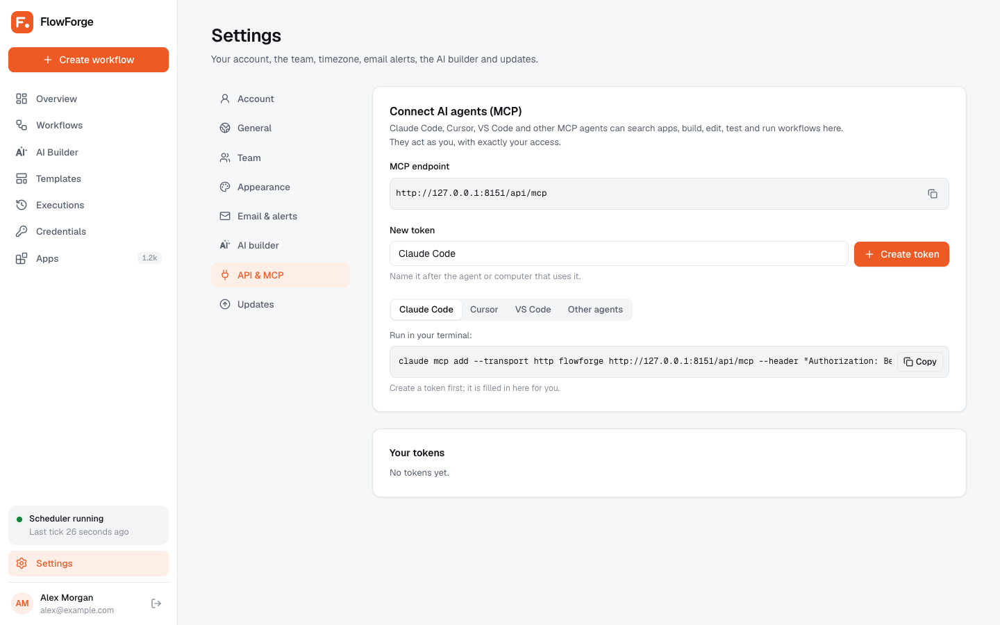
Updating FlowForge
When a new version comes out, download flowforge-update-x.y.z.zip from GitHub Releases.
- Sign in as an admin and open SettingsUpdates.
- Drop
flowforge-update-x.y.z.ziponto the page. It uploads in small pieces, so your host's upload limit doesn't matter. - FlowForge checks the package, backs up the current code, swaps in the new version and updates the database. If anything fails, it puts the old version back.
Your settings, credentials, workflows and run history stay as they are. You can't install an older version over a newer one.
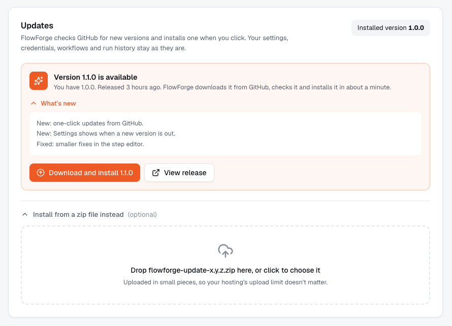
Can't open Settings? You can also update by uploading the full flowforge-install-x.y.z.zip with extract-flowforge.php into the same folder and opening extract-flowforge.php. It keeps your .env and storage folder.
On your phone
FlowForge works on phones like an app, with a bottom tab bar (Home, Workflows, AI, Runs, More). In your phone's browser, choose Add to Home Screen to open it full screen with its own icon.
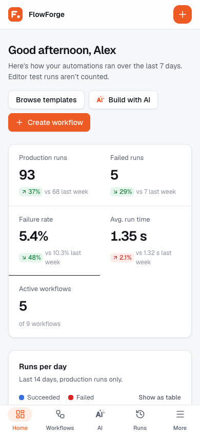
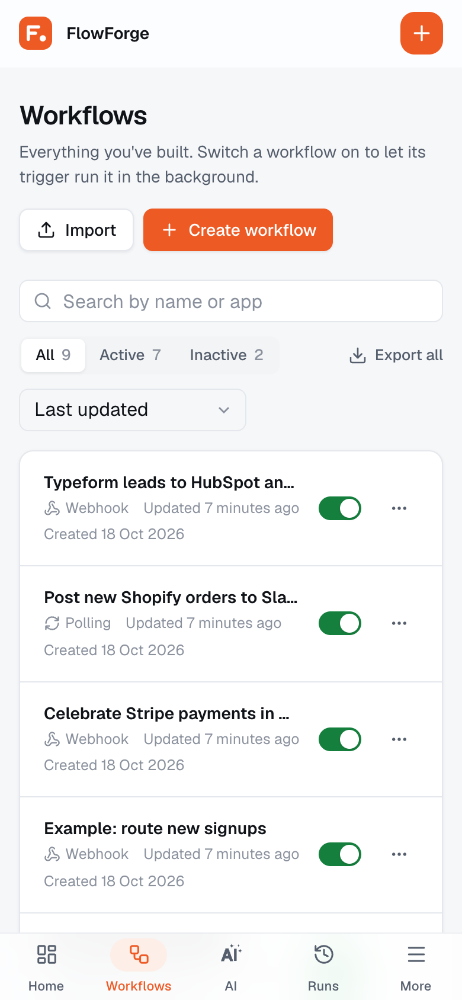
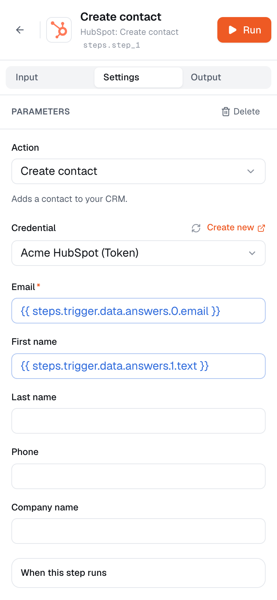
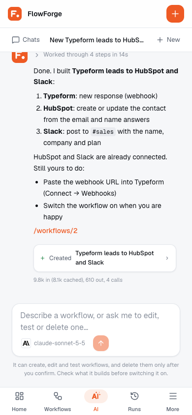
Public demo mode
Want to show FlowForge to others, for example on a public demo site? Turn on demo mode on a separate copy.
- Install FlowForge as usual on its own domain, then add this line to its
.envfile:FLOWFORGE_DEMO=true - Sign in with your admin account and open SettingsLive demo. Choose the visitor login and click Save. The sign-in page shows this login to everyone.
- Build a few sample workflows, then click Save current workflows as the starting point. Every hour, the demo goes back to exactly these workflows.
Visitors can look around, build and edit workflows, use templates and chat with the AI Builder (40 messages an hour). They can't delete anything, add or see credentials, run or switch on workflows, or change settings. Don't use demo mode on the copy you rely on.
Backups and moving servers
To back up FlowForge, keep these three things together:
- The database. Export it from phpMyAdmin or your panel's backup tool.
- The
.envfile in FlowForge's folder. It holds the encryption key: without it, saved credentials and API keys can't be read. - The
storagefolder. It holds logs and update backups.
To move to another server, copy all of FlowForge's files (including .env), import the database, update the database details in .env, and add the cron job on the new server.
Troubleshooting
404 or a blank page right after extracting
The extraction didn't finish. Check that public, vendor and artisan are there; if not, use extract-flowforge.php as described in step 3. If you used the extractor and see a 404 once, reload the page.
500 Server Error
- Check the PHP version is 8.2 or newer for this domain.
- Make sure
storage,bootstrap/cacheand FlowForge's folder are writable (permissions 755 for folders, 644 for files; owned by your hosting user). - The error details are in
storage/logs/laravel.log. Send us the last lines if you're stuck.
The cron step stays on "Waiting"
- Make sure the cron job is set to every minute (all five fields
*) and saved. - The cron's PHP may be older than 8.2. Use the versioned PHP path from The cron job for your panel.
- Check the path to
artisanis the folder where you extracted FlowForge. - Some hosts start cron jobs every 5 minutes at most. Ask your host to allow every minute, or contact us.
Workflows don't run
- Is the workflow switched Active?
- Does the sidebar say Scheduler running? If not, see the cron section above.
- Open Executions: a failed run shows which step failed and why.
- Schedules run in the timezone from SettingsGeneral.
"redirect_uri mismatch" when connecting an app
The redirect URL in the app's developer console must exactly match https://your-domain.com/oauth/callback, including https and www if you use it.
Emails don't arrive
Use Send test email in SettingsEmail & alerts; it shows the exact error. Check the port and security pair (465 with SSL, or 587 with TLS), that the username is the full email address, and your spam folder.
FAQ
Do I need a cron job for each workflow?
No. One cron job runs every workflow.
Does it work on shared hosting?
Yes. It was built for it: no Docker, Node, Redis or background processes, just PHP, MySQL and one cron job.
Is FlowForge really free?
Yes. It's open source under the AGPL-3.0 license, with no limits on users, workflows or sites. You only pay if you want our installation or hosting services.
Can I use it for my business or my clients?
Yes. If you change FlowForge's code and offer your changed version to others over a network, share your changes' source code with them, as the license requires.
Can I install it in a subfolder like your-domain.com/flowforge?
We recommend a subdomain (automation.your-domain.com) instead. Webhook and sign-in URLs are cleaner, and it keeps FlowForge separate from your website.
Do I need an AI API key?
Only for the AI Builder and AI steps. Everything else works without one.
Are there limits on workflows or runs?
No limits from FlowForge. How many runs you can do depends on your hosting.
Where is my data stored?
Only on your server, in your database. FlowForge sends data only to the apps you connect.
How fast do webhooks run?
Within about a minute, on the next cron tick. Test runs from the editor run straight away.
Changelog
Version 1.0.0
First release.
- Visual workflow builder with triggers, actions, If/Else branches, filters and a step editor with drag-to-map data.
- 1,190 apps with 5,783 actions and 615 triggers, and 50 templates.
- AI Builder for DeepSeek, Qwen, OpenAI, Anthropic Claude and Google Gemini.
- Webhook, schedule, app, manual and error triggers; one cron job for everything.
- Executions with step-by-step debugging and retry.
- Team roles and permissions, email alerts, password reset by email code.
- MCP server for AI agents, with personal access tokens.
- Setup wizard with cron verification; one-click updates.
- Released as open source under the AGPL-3.0 license.
- Mobile-friendly layout, light and dark themes.
Support
- Bugs and feature ideas: open an issue on GitHub. Include your FlowForge version, PHP version, what you did and what you saw.
- Installation, hosting, setup help and custom work: email support@sarimtools.com. See Installation and hosting services.
Credits and licenses
FlowForge is licensed under the AGPL-3.0. It is built with these open-source projects:
| Project | License |
|---|---|
| Laravel, Inertia.js, React, React Flow, Tailwind CSS, Vite, Axios | MIT |
| Lucide icons | ISC |
| Symfony components | MIT |
| Anthropic PHP SDK | MIT |
| Geist and Geist Mono fonts | SIL Open Font License 1.1 |
| SVG Logos and Simple Icons (app logos) | CC0 1.0 |
App names and logos are trademarks of their owners and are used only to identify each integration. FlowForge isn't affiliated with or endorsed by them.